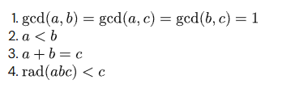

Project Euler
Project Euler probleem 127
Bekijk het originele probleem op Project Euler
Lees eerst de probleemstelling, vertaal het eventueel eerst naar het Nederlands en probeer het.
(Al is het een bruteforce algoritme)
Probleemstelling kort
Voor een getal n is rad(n) het product van de unieke priemfactoren van n.
In dit probleem zoek je abc-hits: triplets (a, b, c) die aan de voorwaarden hieronder voldoen.
Uiteindelijk moet je de som berekenen van alle waarden c waarvoor c < 120000.
Oplossing

Er zijn vier voorwaarden waaraan een triplet zich moet voldoen.
De eerste voorwaarde is dat (gcd*) gcd(a, b) = gcd(a, c) = gcd(b, c) = 1.
Het allereerste optimalisatie dat je kan verrichten in je programma is in plaats van 3 keer de gcd functie uit te voeren maar 1 keer.
Namelijk door het volgende:
Allereerst kan je dit "gcd(a, b) = gcd(a, c) = gcd(b, c)" herschrijven naar "gcd(a, b) = gcd(a, a + b) = gcd(b, a + b)" omdat in de derde voorwaarde staat dat c = a + b.
Wat je opmerkt is dat je in de tweede parameter staat de eerste parameter bij optelt.
gcd(a, b) = gcd(a, a + b) = gcd(b, a + b) = 1
heel die vergelijking is eigenlijk hetzelfde aan gcd(a, b)
omdat stel als je "gcd(a, a + b)" bekijkt dan kan je van twee zaken er van uit gaan:
(1) Ofwel heeft a een gemeenschappelijke deler met b > 1 namelijk x.
Als dat het geval is maakt het niet veel uit of je a gaat toevoegen aan b want de gemeenschappelijke deler zal daardoor niet veranderen.
x zal nog steeds (a + b) kunnen delen.
(2) Ofwel heeft a geen gemeenschappelijke deler met b > 1 en dan zal de toevoeging van a op de gemeenschappelijke deler niet aanpassen.
En is de gcd(a, a + b) steeds gelijk aan 1.
Dus [gcd(a, b) = gcd(a, c) = gcd(b, c)] = gcd(a, b)
Indien je nog meer interesse hebt om te leren over de eigenschappen van de functie gcd kan je deze website raadplegen: Properties of gcd.
De tweede voorwaarde is gelijk aan a < b (dat is belangrijk om de bereik tussen de forloops te bepalen)
En de laatste voorwaarde is gelijk aan rad(a*b*c) < c
De rad functie = het product van de verschillende priemfactoren van een getal.
Voor deze oefeningen zal je het opmerken dat je heelvaak de rad opnieuw zal moeten berekenen dus het is handig om hiervoor een array te gebruiken en voor elke getal tussen 1 en N de rad voor dat getal te berekenen.
In de code hieronder zie je dat ik een soort van zeef heb gebruikt (zoek sieve of eratosthenes op als je er niet mee bekend mee bent Sieve of Eratosthenes).
En het laatste dat ik hierover kwijt wil is dat stel als alle drie de getallen hun gcd(a, b, c) == 1 dan is rad(a*b*c) = rad(a) * rad(b) * rad(c).
Dit komt van het feit als alle drie geen gemeenschappelijke delers hebben dan zullen hun priemfactoren ook van alle drie verschillen.
Dit is handig want dan moet je niet voor zeer hoge getallen hun rad zoeken.
De code ziet er als volgt uit:
Oplossing: 18407904 Uitvoeringstijd: 3.789811 seconden
*gcd = ggd grootste gemene deler